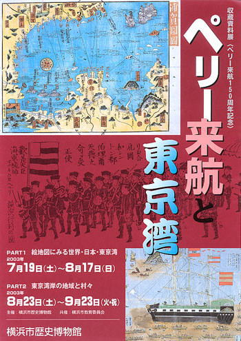

| 見たい項目をクリックして下さい | |||||||||
|
| 行 事 記 録 （詳 細 - ９） |
|
横浜市歴史博物館 収蔵資料展 フロア・レクチャー
ペリー来航と東京湾 ＰＡＲＴ１ 絵地図にみる世界・日本・東京湾 |
| 掲載日 ０３−８−１０ |
|
行 事 名 |
横浜市歴史博物館 フロア・レクチャー ペリー来航と東京湾 ＰＡＲＴ１ 絵地図にみる世界・日本・東京湾 |
|
研 究 部 会 |
特別企画 |
|
実 施 日 |
０３年８月２日（土） １４：００から約１時間 |
|
実 施 場 所 |
横浜市歴史博物館 |
|
参 加 者 |
会員１３名(天野、小方、小林、佐伯、佐々木、柴田、清水、須藤、恒川、坪井、 西田、堀、吉田） 会員外５名（１期OB２名、 3期現役３名） 合計１８名 |
| 記 録 | 天野 博之 |
|
概 要 |
「ペリー来航と東京湾 ＰＡＲＴ１ 絵地図にみる世界・日本・東京湾」 が、横浜市歴史博物館で７月１９日〜８月１７日に開催されています。斎藤司学芸員にお願いして、さいかちの会のためのフロア・レクチャーを実施して頂きました。 |
|
横浜市歴史博物館で開催中の「ペリー来航と東京湾
ＰＡＲＴ１ 絵地図にみる世界・日本・東京湾」 展のフロア・レクチャーが、斎藤 司 学芸員に講師をお願いして、開催されました。 太平の 眠りを醒ます上喜撰（お茶の銘柄、蒸気船に
かけた） たった四杯で 夜も寝られず 日本に開国を迫ったペリー率いる４隻のアメリカの黒船の来航は、江戸時代の庶民を驚かせました。今年は１５０周年に当り、神奈川県立歴史博物館をはじめ各地で、記念展が開かれています。我が横浜市歴史博物館の展示は、館蔵品（市歴博の収蔵品）で構成されています。
第１部は、ペリー来航以前の日本人の作成した世界地図や日本地図の展示です。１８２０年代の伊能忠敬作成の日本地図が有名ですが、１７５０年代にもほぼ正確な日本地図が作られていることには驚きます。 第２部は、海上交通図です。航路や、イザという時の各地の港が詳細に書き込まれた地図もあります。ただ当時の実情を反映して、琉球・蝦夷地は本土に近い部分だけが簡単に描かれているだけです。 第３部は、いよいよお待ち兼ねのペリーの登場です。「ペリーって、こんな顔をしていたんだ！」と喜んでいる小学生がいました。 斎藤学芸員の話術に、笑いの絶えない１時間でした。解説が無いと、見落としてしまうことが多いことを実感し
ました。と共に、展示をいかに興味深く見せるか、その工夫の数々、裏話は、これからの展覧会見学に、まったく新たな視点を付け加えることになりそうです。
|
 | |
| 「ペリー来航と東京湾 ＰＡＲＴ１ 絵地図にみる 世界・日本・東京湾」展のポスター |
||
| |
| 記録の一覧表 に戻る |